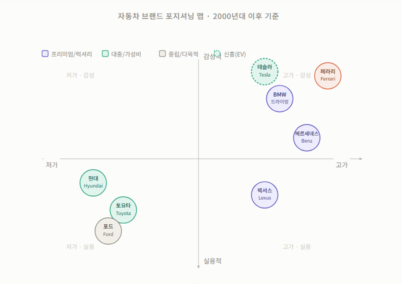

기업혁신 1 — 브랜딩 전략Corporate Innovation 1 — Branding Strategy
같은 바퀴 위, 다른 생존법Same Wheels, Different Survival
자동차 백년사가 말해주는 것 — 브랜드는 어떻게 살아남았고, 어떻게 스스로를 다시 발명했는가What a Century of Automobiles Tells Us — How Brands Survived and Reinvented Themselves
자동차가 '신분'이 되기까지How the Car Became a Symbol of Status
1908년, 헨리 포드는 세상을 바꿀 차 한 대를 내놓았다. '모델 T'다. 컨베이어 벨트 대량생산 시스템을 도입하자 가격은 파격적으로 폭락했고, 평범한 노동자도 차를 살 수 있는 시대가 열렸다. 그러나 포드에게 '선택'이란 애초에 없었다. 그는 이런 말을 남겼다.In 1908, Henry Ford introduced a car that would change the world — the Model T. When he adopted the conveyor-belt mass production system, prices plummeted dramatically and an era opened where ordinary workers could buy a car. But to Ford, "choice" never existed from the start. He famously said:
"소비자는 검은색이기만 하다면, 어떤 색이든 원하는 차를 고를 수 있다.""Any customer can have a car painted any color that he wants so long as it is black."
— 헨리 포드 (Henry Ford)— Henry Ford
생산 효율을 극대화하기 위해 페인트가 가장 빨리 마르는 검은색 단 한 가지만 만들겠다는 선언이었다. 선택권은 없었지만, 가격이 모든 것을 정당화했다.It was a declaration to make only the single color whose paint dried fastest, in order to maximize production efficiency. There was no choice — but the price justified everything.
그런데 모든 사람이 도로 위에서 똑같은 검은색 포드만 타기 시작하자, 후발주자였던 GM(제너럴 모터스)은 인간 내면의 '과시 욕구'를 정확히 읽었다. 사람들은 단순히 이동하고 싶은 게 아니었다. '어떤 차를 타느냐'로 자신을 표현하고 싶어했다. GM의 수장 알프레드 슬론은 "모든 주머니 사정과 목적에 맞는 차를 만들겠다"며 브랜드를 계급별로 쪼개는 '사다리 포지셔닝 전략'을 내놓았다.But when everyone on the road began driving the same black Ford, the latecomer GM precisely read the human urge to show off. People did not simply want to move around — they wanted to express themselves through "what car they drove." GM's chief Alfred Sloan declared "a car for every purse and purpose" and introduced a "ladder positioning strategy" that divided brands by class.
그는 쉐보레(저가)부터 캐딜락(최고급)까지 브랜드를 층층이 쌓았고, 소비자는 차를 사는 것이 아니라 '자신의 사회적 위치'를 사기 시작했다. 이때부터 자동차는 단순한 이동 수단을 넘어 정체성을 대변하는 언어가 되었다.He stacked brands in tiers from Chevrolet (low-end) to Cadillac (ultra-luxury), and consumers began buying not a car but their "social position." From this point on, the automobile transcended mere transportation and became a language representing identity.
1950~60년대 미국 자동차 산업은 말 그대로 전성기였다. 포드, GM, 크라이슬러 — 이른바 '빅 3'가 세계 시장을 쥐고 흔들었다. 크고 화려하고 강력한 차가 곧 '좋은 차'였다. 연비 따위는 아무도 묻지 않았다.The American auto industry of the 1950s–60s was literally in its golden age. Ford, GM, Chrysler — the so-called "Big Three" — held and shook the global market. A big, flashy, powerful car was simply a "good car." Nobody asked about fuel economy.
한편 같은 시기, 메르세데스-벤츠나 페라리 같은 유럽 브랜드들은 완전히 다른 길을 걸었다. 왕실의 장인정신과 레이싱 서킷의 승리 기록을 포장해 "우리가 만드는 것은 기계가 아니라 예술품"이라는 하이엔드 럭셔리의 성벽을 쌓아 올린 것이다.Meanwhile, during the same period, European brands like Mercedes-Benz and Ferrari walked an entirely different path. By packaging royal craftsmanship and a record of racing circuit victories, they built the fortress of high-end luxury — the declaration that "what we make is not a machine but a work of art."
일본차의 등장, 그리고 '당연함'의 붕괴The Arrival of Japanese Cars — and the Collapse of the Obvious
1973년, 오일쇼크가 터졌다. 휘발유 값이 치솟자 기름을 길바닥에 뿌리고 다니던 미국 대형차들의 신화가 무너지기 시작했고, 그 빈틈을 칼날처럼 파고든 것이 토요타와 혼다를 필두로 한 일본 브랜드들이었다.In 1973, the oil shock hit. As gasoline prices soared, the myth of large American cars guzzling fuel began to collapse, and it was Japanese brands led by Toyota and Honda that sliced into that gap like a blade.
일본차의 전략은 명확했다. 기름은 극도로 적게 먹으면서, 한 번 사면 10년 동안 정비소에 갈 일이 없을 정도로 실용적인 차를 만드는 것이었다. 그들은 자동차를 '낭만과 감성'의 영역에서 '완벽한 품질을 자랑하는 가전제품'의 영역으로 끌어내리며 글로벌 대중 시장을 문자 그대로 폭격했다. 미국 빅 3가 무시하던 '소형차' 시장이었다.The Japanese car strategy was clear: burn as little fuel as possible and build cars so practically reliable that once bought, you would not need a repair shop for ten years. They dragged the automobile from the realm of "romance and emotion" down to "consumer electronics with flawless quality" and literally bombed the global mass market — the "compact car" segment the American Big Three had dismissed.
그러나 토요타에게도 치명적인 약점이 있었다. "토요타 = 싸고 질 좋은 대중차"라는 인식이 너무 강력하게 박힌 나머지, 고급차 시장으로는 도무지 진입할 수가 없었다. 아무리 성능이 좋아도, 마트 장바구니를 실을 것 같은 대중차 브랜드 로고를 달고 고급 호텔 정문에 내릴 수는 없다 — 이른바 '하차감'의 장벽이었다.Yet Toyota had a fatal weakness too. The perception that "Toyota = cheap but high-quality mass-market car" was so powerfully ingrained that entering the luxury car market was out of the question. No matter how good the performance, you cannot step out in front of a luxury hotel wearing a mass-market brand logo that looks like it carries grocery bags — this was the barrier of so-called "exit prestige."
여기서 토요타는 대담한 결단을 내린다. 1989년, 자사의 이름을 완전히 숨긴 채 유럽 럭셔리 브랜드들과 전면전을 벌이기 위해 '렉서스(Lexus)'라는 독립 브랜드를 론칭한 것이다. 그리고 혼다는 '아큐라'를, 닛산은 '인피니티'를 론칭했다. 전략은 단순했다 — 독일 프리미엄 브랜드(BMW, 메르세데스-벤츠)보다 저렴하지만, 품질은 대등하거나 그 이상. 가성비 끝판왕인 동시에, 럭셔리 시장까지 침투한 것이다.Here Toyota made a bold decision. In 1989, completely concealing its own name, it launched the independent brand Lexus to wage an all-out war against European luxury brands. Honda launched Acura, Nissan launched Infiniti. The strategy was simple — cheaper than German premium brands (BMW, Mercedes-Benz) but with equal or superior quality. The ultimate value-for-money proposition, while simultaneously penetrating the luxury market.
대중차 시장에서 다져온 결점 없는 품질에 극단적인 실내 정숙성과 고객 서비스를 결합한 렉서스는, 대중차 브랜드가 영리한 브랜딩 분리 전략만으로도 전통적인 럭셔리 제국을 뒤흔들 수 있다는 것을 증명했다.Lexus, combining the flawless quality cultivated in the mass market with extreme cabin quietness and customer service, proved that a mass-market brand — through a clever brand separation strategy alone — could shake a traditional luxury empire.
미국과 유럽 브랜드들은 충격을 받았다. 품질 혁신과 가격 경쟁력을 동시에 들이민 일본차 앞에서, 기존 플레이어들은 자신의 정체성을 다시 물어야 했다. “나는 도대체 누구에게, 무엇을 팔고 있는가?”American and European brands were shaken. Faced with Japanese cars that simultaneously pushed quality innovation and price competitiveness, existing players had to question their own identity: “Exactly who am I selling to, and what am I selling?”
생존의 갈림길 - 하이엔드 vs 저가형The Fork in the Road — High-End vs. Low-Cost
경쟁이 치열해질수록 브랜드들의 선택지는 좁아졌다. '더 비싸지거나, 더 저렴해지거나.' 가운데서 어정쩡하게 버티는 건 가장 위험한 포지션이었다. 시장은 크게 두 방향으로 나뉘었고, 각 브랜드는 저마다의 방식으로 자신의 자리를 만들었다.As competition intensified, brands' options narrowed. "Go more expensive or go cheaper." Straddling the middle was the most dangerous position. The market split broadly into two directions, and each brand carved out its place in its own way.
Ferrari — 희소성을 파는 브랜드High-End · ExclusivityFerrari — Selling Scarcity · High-End · Exclusivity
페라리의 브랜딩 철학은 단 한 문장으로 요약된다. "시장이 원하는 수요보다 무조건 한 대 덜 만든다." 페라리는 연간 생산량을 의도적으로 1만 대 수준으로 제한한다. 수요가 공급을 언제나 앞서도록 설계된 구조다. 이 때문에 신차를 사려면 몇 년씩 대기 명단에 올라야 하는 경우도 낯설지 않다.Ferrari's branding philosophy can be summarized in one sentence: "Always build one fewer car than the market demands." Ferrari intentionally limits annual production to around 10,000 units. It is a structure designed so that demand always exceeds supply. For this reason, it is not unusual to wait years on a list to buy a new car.
더 흥미로운 것은 '아무나 살 수도 없다'는 점이다. 페라리는 처음 차를 사려는 고객에게 최상위 모델을 팔지 않는다. 브랜드와의 관계를 쌓아온 충성 고객에게만 한정판 모델 구매 자격이 주어진다. 차를 사는 행위 자체가 일종의 자격 심사인 셈이다. 소비자로 하여금 차를 소유하는 것 자체를 거대한 특권으로 느끼게 만들어, 심리적 지불 의향을 한계까지 끌어올리는 전략이다.Even more intriguing is that "not just anyone can buy one." Ferrari does not sell its top models to first-time buyers. Only loyal customers who have built a relationship with the brand are given the right to purchase limited-edition models. The act of buying a car is itself a kind of qualification screening. The strategy is to make consumers feel that owning the car is a tremendous privilege, pulling their psychological willingness to pay to its limit.
F1 레이싱 트랙에서의 성적도 빠뜨릴 수 없다. 페라리는 F1에서 가장 오랜 역사를 가진 팀이다. 서킷에서의 승리는 곧 도로 위의 차가 그 기술을 담고 있다는 증거로 작동한다. 스포츠의 승리가 브랜드의 정당성을 만드는 것이다.F1 racing track results cannot be left out. Ferrari is the team with the longest history in F1. Victory on the circuit serves as proof that the road car embodies that technology. A sporting victory creates brand legitimacy.
Mercedes-Benz — 최고가 아니면 만들지 않는다High-End · EngineeringMercedes-Benz — Nothing Less Than the Best · High-End · Engineering
메르세데스-벤츠의 슬로건은 "Das Beste oder nichts", 즉 "최고가 아니면 아무것도 아니다"이다. 이 한 문장이 브랜드 전략의 전부라고 해도 과언이 아니다. 자동차를 사는 게 아니라, 기준을 사는 것이라는 메시지다.Mercedes-Benz's slogan is "Das Beste oder nichts" — "The best or nothing." It is no exaggeration to say this one sentence is the entirety of the brand strategy. The message is that you are not buying a car, but buying a standard.
메르세데스는 페라리처럼 소수에게만 파는 전략을 택하지 않았다. 대신 프리미엄 대중화를 선택했다. A클래스 같은 상대적으로 접근 가능한 모델부터 S클래스, 마이바흐까지 촘촘한 라인업을 구성해, 더 많은 사람이 '벤츠 오너'가 될 수 있도록 했다. 동시에 최상위 라인의 권위를 유지함으로써 브랜드 전체의 위상을 받쳐주는 구조다.Mercedes did not choose Ferrari's strategy of selling to only a few. Instead it chose premium democratization — building a dense lineup from relatively accessible models like the A-Class all the way to the S-Class and Maybach, enabling more people to become "Benz owners." At the same time, by maintaining the authority of the top-tier line, it supports the prestige of the entire brand.
기술 측면에서도 메르세데스는 오랫동안 업계의 표준을 만들어왔다. 안티락 브레이크(ABS), 에어백, 안전벨트 등 오늘날 모든 차에 달린 안전 기술 상당수가 메르세데스에서 처음 상용화됐다. '안전과 기술의 선구자'라는 유산이 브랜드 신뢰의 토대가 된 것이다.On the technology front too, Mercedes has long set industry standards. Anti-lock brakes (ABS), airbags, seatbelts — many of the safety technologies found in all cars today were first commercialized by Mercedes. The legacy of "pioneer of safety and technology" has become the foundation of brand trust.
Toyota — 지루하지만 완벽한 차Mass Market · ReliabilityToyota — Unglamorous but Perfect · Mass Market · Reliability
토요타를 한 문장으로 표현하면 이렇다. "한 번 사면 고장 없이 탄다." 화려하지 않아도 좋다. 소비자가 원하는 건 믿을 수 있는 차다 — 토요타는 이 단순한 진리를 수십 년째 실천하고 있다. 그 바탕에는 '카이젠(改善)'이라는 철학이 있다. 매일 조금씩 개선한다는 뜻으로, 대단한 혁신보다 작은 개선을 꾸준히 쌓는 것이 결국 가장 강한 품질을 만든다는 믿음이다.Toyota in one sentence: "Buy it once and drive without breakdowns." It does not need to be glamorous. What consumers want is a car they can trust — Toyota has been practicing this simple truth for decades. At its core lies the philosophy of kaizen (改善), meaning continuous improvement: the belief that steadily accumulating small improvements — more than dramatic innovation — ultimately produces the strongest quality.
그러나 토요타는 이 신뢰성 전략만으로는 벽을 만났다. 대중차 브랜드의 이미지가 너무 강한 나머지, 고급차 시장의 소비자들에게는 아무리 좋은 차를 만들어도 외면받기 십상이었다. 이른바 '하차감의 장벽'이다. 토요타의 해법은 '렉서스'라는 별도 브랜드를 만들어 프리미엄 시장에 진출하는 것이었다. 대중차 이미지를 건드리지 않으면서 고급차 시장의 수익도 챙기는 영리한 이중 전략이다.But Toyota hit a wall relying on this reliability strategy alone. With the mass-market brand image so strong, no matter how good a car it built, luxury market consumers were prone to look away. This is the so-called "arrival impression barrier." Toyota's solution was to create a separate brand — Lexus — and enter the premium market. A clever dual strategy that captures premium market profits without touching the mass-market image.
실제로 렉서스는 출시 직후 메르세데스-벤츠와 BMW를 미국 소비자 만족도 조사에서 앞지르며 업계를 충격에 빠뜨렸다. 오랜 헤리티지 없이도, 기술력과 브랜딩만으로 럭셔리 시장을 뚫을 수 있다는 것을 증명한 사례다.Indeed, Lexus immediately surpassed Mercedes-Benz and BMW in U.S. consumer satisfaction surveys right after launch, shocking the industry. It is a case proving that even without long heritage, technology and branding alone can break into the luxury market.
Hyundai — 약점을 무기로 바꾼 역발상Mass Market · Bold GuaranteeHyundai — Turning Weakness into a Weapon · Mass Market · Bold Guarantee
1990년대 현대차는 미국 시장에서 혹독한 평가를 받고 있었다. "싸긴 한데 믿을 수 없다"는 이미지였다. 실제로 품질 문제가 적지 않았고, 브랜드 신뢰도는 바닥이었다. 대부분의 기업이라면 조용히 품질을 개선하며 시간을 기다렸을 것이다. 현대는 다른 선택을 했다.In the 1990s, Hyundai was receiving harsh evaluations in the American market. The image was "cheap, but unreliable." Quality problems were real, and brand credibility was at rock bottom. Most companies would have quietly improved quality and waited. Hyundai made a different choice.
1998년, 현대는 미국 시장에 '10년 10만 마일 파워트레인 보증'을 들고 나왔다. 당시 업계 표준의 두 배가 넘는 파격적인 조건이었다. 소비자들은 반응했다. "이 정도 보증을 내건다면 자신 있다는 뜻 아닌가." 현대는 품질을 직접 증명하는 대신, 보증으로 신뢰를 먼저 만들었다. 순서를 뒤집은 것이다.In 1998, Hyundai came to the American market with a "10-year/100,000-mile powertrain warranty" — more than double the industry standard at the time. Consumers responded: "If they're offering a warranty like that, they must be confident." Instead of directly proving quality, Hyundai built trust through the warranty first. It reversed the order.
이 전략은 주효했다. 판매량이 뛰었고, 실제 품질 투자도 뒤따랐다. 지금의 현대는 북미 신차 품질 조사에서 프리미엄 브랜드들과 어깨를 나란히 한다. 약점을 숨기는 대신 정면으로 돌파한 브랜딩의 교과서적인 사례로 꼽힌다.The strategy worked. Sales jumped, and actual quality investment followed. Today's Hyundai stands shoulder-to-shoulder with premium brands in North American initial quality studies. It is cited as a textbook case of branding that confronted weakness head-on instead of hiding it.
흥미로운 점은, 같은 시대 같은 산업에서 출발했지만 전혀 다른 방식으로 살아남았다는 점이다. 옳고 그름의 문제가 아니다. 페라리처럼 소수에게만 팔아도 생존할 수 있고, 토요타처럼 모두에게 팔아도 브랜드는 강해질 수 있다. 브랜드는 결국 '우리는 이런 사람들을 위한 차입니다'라는 선언이고, 그 선언을 수십 년간 지켜낸 기업만이 살아남았고, 중요했던 건 선택한 포지션을 일관되게 지키는 것이다.What is interesting is that these brands all started in the same era, in the same industry, yet survived in entirely different ways. It is not a question of right or wrong. You can survive selling to only a few like Ferrari, and you can build a strong brand selling to everyone like Toyota. A brand is ultimately a declaration — "we make cars for these kinds of people" — and only the companies that upheld that declaration for decades survived. What mattered was consistently maintaining the position they chose.
한눈에 보는 포지셔닝 맵Brand Positioning Map at a Glance
각 브랜드의 전략을 두 축으로 놓고 보면 더 선명해진다. 가격대(저가↔고가)와 브랜드 성격(실용적↔감성적)을 기준으로 주요 브랜드를 배치해 보았다.The strategies of each brand become clearer when plotted on two axes. We positioned major brands along dimensions of price range (low-end ↔ high-end) and brand character (rational ↔ emotional).

새로운 도전자 테슬라가 바꾼 게임의 규칙How Tesla Changed the Rules of the Game
2003년, 자동차를 만들어본 적 없는 실리콘밸리 엔지니어들이 회사를 차렸다. 누구도 진지하게 보지 않았다. 기존 완성차 업체들은 수십 년의 제조 노하우와 딜러 네트워크, 브랜드 자산을 가지고 있었다. 후발주자가 끼어들 틈이 없어 보였다.In 2003, Silicon Valley engineers who had never built a car before started a company. No one took it seriously. Existing automakers held decades of manufacturing know-how, dealer networks, and brand equity. There seemed to be no room for a latecomer to squeeze in.
그런데 테슬라는 헤리티지 경쟁에 끼어들 생각조차 하지 않았다. 대신 자동차를 달리는 기계가 아닌, '바퀴 달린 거대한 스마트폰'으로 재정의해 버린 것이다. 자동차 산업의 문법을 통째로 무시하고 딜러십 없이 직접 판매했다. 소프트웨어 업데이트로 차를 계속해서 진화시켰다.Tesla, meanwhile, had no intention of entering the heritage competition at all. Instead, it redefined the car not as a driving machine but as a ‘giant smartphone on wheels.’ It ignored the grammar of the automotive industry wholesale, selling directly without dealerships. It continuously evolved the car through software updates.
테슬라는 스스로를 자동차 회사가 아닌 테크 기업으로 규정했다. 비교 대상을 벤츠나 BMW가 아니라 애플과 구글로 설정한 것이다. 덕분에 프리미엄 가격을 정당화하면서도, 혁신적이고 미래지향적인 브랜드 이미지를 얻었다. "전기차 = 느리고 지루하다"는 편견도 함께 박살냈다.Tesla defined itself not as an automaker but as a tech company, setting its comparators not as Mercedes or BMW but as Apple and Google. This allowed it to justify premium pricing while gaining an innovative, future-oriented brand image — and simultaneously shattered the prejudice that "EVs = slow and boring."
이러한 테슬라의 성공은 기존 완성차 산업 전체를 흔들었다. GM, 포드, 폭스바겐, 현대 모두 앞다투어 전기차 라인업을 발표했다. 후발주자가 선발주자들의 전략을 전부 바꾸게 만든 것이다. 이것이 브랜드 포지셔닝의 힘이다 — 제품보다 '의미'를 먼저 설계한 브랜드가, 더 큰 시장을 움직인다.Tesla's success shook the entire existing auto industry. GM, Ford, Volkswagen, and Hyundai all rushed to announce EV lineups. A latecomer had forced all the front-runners to change their entire strategy. This is the power of brand positioning — the brand that designs "meaning" before the product moves a bigger market.
바퀴는 같아도, 이야기는 달라야 한다Same Wheels, Different Story
100년이 넘는 자동차 산업의 역사는 결국 브랜드 전략의 역사이기도 하다. 포드가 대량생산으로 문을 열고, GM이 계급의 언어를 만들었으며, 일본차가 균열을 냈고, 테슬라가 판을 뒤흔들었다. 기술이 평준화될수록, 소비자는 '무엇을 사는가'보다 '왜 이 브랜드를 사는가'를 묻는다.Over a century of auto industry history is ultimately also a history of brand strategy. Ford opened the door with mass production, GM created the language of class, Japanese cars cracked the foundation, and Tesla upended the board. As technology becomes commoditized, consumers ask not "what am I buying?" but "why this brand?"
산업이 전동화·자율주행으로 또 한 번 격변하는 지금, 모빌리티 기업들은 다시 같은 질문 앞에 서 있다. 나는 누구에게, 어떤 이야기를 파는가. 그 답을 먼저 찾는 브랜드가 다음 100년을 이끌 것이다.As the industry undergoes another upheaval with electrification and autonomous driving, mobility companies stand before the same question again. Who am I selling to, and what story am I selling? The brand that finds the answer first will lead the next century.
기업혁신 2 — EV·자율주행Corporate Innovation 2 — EV & Autonomous Driving
130년 내연기관 패러다임의 해체와 진입 장벽의 붕괴Dismantling 130 Years of ICE Paradigm and the Collapse of Entry Barriers
자동차 산업은 지난 한 세기 동안 기계공학이 쌓아 올린 견고한 요새였다. 실린더 내부의 폭발을 정밀하게 통제하는 내연기관, 그리고 수만 개의 부품이 맞물려 돌아가는 변속기는 그 자체로 거대한 진입 장벽이었다. 글로벌 완성차 기업들은 마력과 토크라는 지표로 기술적 권위를 증명하며 그들만의 철옹성을 지켜냈다. 엔진의 굉음은 곧 브랜드의 자존심이었고, 신생 기업이 이 130년의 축적된 노하우를 단숨에 따라잡는 것은 불가능의 영역으로 여겨졌다.For the past century, the auto industry was a fortress built up by mechanical engineering. The internal combustion engine that precisely controls explosions inside cylinders, and the transmission with tens of thousands of interlocking parts, were themselves enormous entry barriers. Global automakers proved their technical authority through the metrics of horsepower and torque, maintaining their impregnable stronghold. The roar of an engine was a brand's pride, and for a new company to catch up to 130 years of accumulated know-how overnight was considered impossible.
그러나 영원할 것 같던 이 역사는 '전동화'라는 새로운 룰을 만나면서 통째로 뒤흔들리고 있다. 기계적 정밀함이 지배하던 자리에 IT 기술이 본격적으로 개입하면서부터다. 전기차의 본질은 복잡한 기계라기보다 거대한 전자기기에 가깝다. 엔진과 변속기가 사라진 자리를 배터리와 모터가 대체하면서, 3만 개에 달하던 차량 부품 수는 순식간에 절반 이하로 급감했다. 과거 완성차 기업들이 누리던 굳건한 기계공학적 장벽은 이 단순해진 구조 앞에서 빠르게 무력화되었다.But this history that seemed eternal is being shaken to its core upon meeting the new rules of "electrification." It began when IT technology started intervening in earnest in the space once dominated by mechanical precision. The essence of an electric vehicle is closer to a massive electronic device than a complex machine. As batteries and motors replaced the engine and transmission, the number of car components that once reached 30,000 plummeted instantly to less than half. The firm mechanical engineering barriers that legacy automakers once enjoyed were rapidly neutralized before this simplified structure.
이제 자동차는 기름을 태워 달리는 이동 수단이 아니라, 코드로 통제되고 전동화 파워트레인으로 구동되는 '바퀴 달린 디바이스'로 다시 쓰이고 있다. 하드웨어의 복잡성이 걷힌 트랙 위에는 소프트웨어 역량과 전력 관리 능력이 새로운 승리 공식으로 자리 잡았다. 과거의 헤리티지가 더 이상 현재의 절대적 우위를 보장하지 않는 낯선 국면 속에서, 산업의 주도권을 거머쥐기 위한 플레이어들의 진짜 레이스가 막을 올렸다.The automobile is now being rewritten — no longer a means of transportation burning fuel, but a "wheeled device" controlled by code and driven by an electrified powertrain. On a track cleared of hardware complexity, software capability and power management have taken their place as the new formula for winning. In this unfamiliar landscape where past heritage no longer guarantees absolute present advantage, the real race among players to seize industry leadership has begun.
시장의 개척자: 자동차의 정의를 바꾼 테슬라The Pioneer: Tesla, Who Redefined the Car
현재의 전기차 시장을 논할 때 테슬라(Tesla)의 발자취를 제외할 수는 없다. 기존 완성차 업체들이 전기차를 고비용과 저효율의 시기상조 기술로 치부하며 외면할 때, 테슬라는 고성능 세단을 선보이며 전동화의 포문을 열었다. 그들은 전기차를 단순한 친환경 대체재가 아닌, 소비자가 동경할 만한 고성능 프리미엄 제품으로 포지셔닝하며 시장을 개척했다.When discussing the current EV market, Tesla's footprints cannot be excluded. While existing automakers dismissed EVs as a premature technology of high cost and low efficiency, Tesla opened the door to electrification with a high-performance sedan. They pioneered the market by positioning EVs not as a simple eco-friendly alternative, but as a high-performance premium product worthy of consumer aspiration.
테슬라가 시장에 준 가장 큰 충격은 자동차를 '달리는 스마트폰'으로 재정의했다는 점이다. 과거의 자동차는 공장을 나서는 순간 기술적으로 노후화가 시작되는 닫힌 하드웨어였다. 수십 개의 전자제어장치(ECU)가 차량 곳곳에 파편화되어 분산되어 있었기 때문에, 한 번 만들어진 차량의 기능을 사후에 통합적으로 수정하는 것은 불가능했다. 반면 테슬라는 중앙 집중형 전자제어 구조를 독자적으로 설계했다. 이를 바탕으로 무선 소프트웨어 업데이트(OTA)를 도입하여, 차량 출고 이후에도 주행 성능을 개선 및 새로운 기능을 추가하는 비즈니스 모델을 증명했다.The biggest shock Tesla delivered to the market was redefining the car as a "smartphone on wheels." Cars of the past were closed hardware that began technologically aging the moment they left the factory. With dozens of Electronic Control Units (ECUs) fragmented and distributed throughout the vehicle, it was impossible to comprehensively modify a built car's functions after the fact. Tesla, by contrast, independently designed a centralized electronic control architecture. On this foundation it introduced over-the-air (OTA) software updates, proving a business model that improves driving performance and adds new features even after vehicle delivery.
여기에 독자적인 충전 인프라인 '수퍼차저(Supercharger)' 생태계를 전 세계에 촘촘하게 구축하며, 하드웨어 제조사를 넘어선 플랫폼 기업으로서의 지위를 선점했다. 하드웨어 및 소프트웨어, 그리고 충전 인프라를 하나의 생태계로 묶어 제공하는 테슬라의 이 방식은 곧 전동화 시대의 명확한 '표준(Standard)'이 되었다. 후발 주자들은 이제 테슬라가 그어놓은 이 표준 선을 넘어야 하는 과제를 안게 되었다.On top of that, by building a dense global network of its proprietary Supercharger charging infrastructure, Tesla preempted the position of a platform company that transcends hardware manufacturing. Tesla's approach of bundling hardware, software, and charging infrastructure into a single ecosystem quickly became the clear "standard" of the electrification era. Latecomers now face the challenge of surpassing the standard line Tesla has drawn.
레거시의 반격: 전용 플랫폼과 규모의 경제The Legacy Counterattack: Dedicated Platforms and Economies of Scale
테슬라가 개척한 시장에 현대자동차, 폭스바겐, 토요타를 포함한 기존 레거시 완성차 기업(Legacy OEM)들이 합류하며 경쟁은 새로운 국면을 맞이했다. 초기에는 내연기관 차량의 뼈대를 그대로 둔 채 엔진만 모터로 바꾸는 파생 전기차 모델을 선보였으나, 이내 구조적 한계를 깨닫고 전면적인 체질 개선에 나섰다. 이들의 가장 강력한 무기는 수십 년간 축적해 온 대량 생산 노하우와 촘촘하게 짜인 글로벌 공급망이다.As legacy automakers including Hyundai, Volkswagen, and Toyota joined the market Tesla pioneered, competition entered a new phase. Initially they introduced derivative EV models that kept the ICE vehicle skeleton intact and simply replaced the engine with a motor, but they soon recognized the structural limits and moved toward comprehensive transformation. Their most powerful weapon is the mass production know-how accumulated over decades and the tightly woven global supply chain.
이 거대한 제조 역량이 집약된 결과물이 바로 '전기차 전용 플랫폼(현대차그룹 E-GMP, 폭스바겐 MEB 등)이다. 내연기관의 뼈대를 억지로 개조하던 방식을 버리고, 배터리와 모터 배치를 최적화한 스케이트보드 형태의 새로운 골격을 짠 것이다. 이 구조는 단순히 차량의 무게중심을 낮추고 실내 공간을 넓히는 기술적 이점에만 머물지 않는다. 이 플랫폼의 진짜 파괴력은 부품의 모듈화를 통해 생산 공정 자체를 극적으로 단순화했다는 데 있다.The product concentrating this enormous manufacturing capability is none other than the EV-dedicated platform (Hyundai Motor Group's E-GMP, Volkswagen's MEB, etc.). Abandoning the approach of forcibly converting ICE vehicle skeletons, they built a new skateboard-form skeleton optimizing battery and motor placement. This structure does not stop at the technical advantages of lowering the vehicle's center of gravity and expanding interior space. The real disruptive power of this platform lies in dramatically simplifying the production process itself through parts modularization.
레거시 기업들은 이 잘 짜인 하나의 플랫폼을 바탕으로 세단, SUV, 크로스오버 등 다양한 차급의 라인업을 마치 블록을 조립하듯 빠르게 쏟아내고 있다. 여기에 오랜 시간 전 세계에 구축해 둔 촘촘한 판매망과 애프터서비스(A/S) 인프라가 결합되자 반격의 파급력은 배가되었다. 테슬라가 개척자가 되어 길을 열었다면, 전통의 강자들은 자신들이 가장 잘하는 규모의 경제를 앞세워 전기차를 대중의 영역으로 끌어내리며 시장의 판도를 흔들고 있다.Legacy companies are rapidly rolling out lineups across sedan, SUV, and crossover segments on this well-designed single platform, assembling them like building blocks. When combined with the dense global sales networks and after-service infrastructure built over many years, the power of the counterattack was doubled. If Tesla was the pioneer who opened the road, the traditional powerhouses are shaking the market landscape by pulling EVs into the mass-market realm, leveraging the economies of scale at which they excel.
신흥 강자의 등장: 수직계열화와 압도적 원가 경쟁력Rise of New Challengers: Vertical Integration and Cost Dominance
테슬라와 레거시 기업들이 주도권을 다투는 와중에, 가장 위협적인 속도로 치고 올라오는 플레이어들이 있다. BYD를 필두로 한 중국계 신흥 브랜드들이다. 이들은 내연기관 시대에는 변방에 머물렀으나, 전동화로의 패러다임 전환기를 기회 삼아 글로벌 무대의 중심부로 빠르게 진입했다. 이들의 전략은 명확하다. 바로 공급망의 수직계열화와 압도적인 원가 경쟁력이다.While Tesla and legacy companies contest leadership, there are players rising at the most threatening speed. They are Chinese emerging brands led by BYD. Confined to the periphery in the ICE era, they seized the paradigm shift to electrification as an opportunity and rapidly entered the center of the global stage. Their strategy is clear: vertical integration of the supply chain and overwhelming cost competitiveness.
전기차 제조 원가에서 가장 큰 비중을 차지하는 것은 단연 배터리다. 배터리 제조사로 출발한 BYD는 이 지점에서 다른 완성차 기업들이 가질 수 없는 태생적 우위를 점했다. 이들은 원가의 핵심인 배터리(LFP)를 직접 설계하고 생산하는 것을 넘어, 구동 모터와 전력 반도체에 이르기까지 전기차 제조에 필요한 핵심 부품 생태계 전체를 자사 안으로 끌어들였다.The largest share of EV manufacturing cost is undoubtedly the battery. BYD, which started as a battery manufacturer, secured an innate advantage here that other automakers cannot possess. Beyond directly designing and producing the battery (LFP) at the core of costs, they have drawn the entire key component ecosystem needed for EV manufacturing — including drive motors and power semiconductors — within their own walls.
부품 수급부터 완성차 조립까지 외부 의존도를 지워낸 이 극단적인 수직계열화는 곧 경쟁사가 흉내 낼 수 없는 가격 파괴력으로 이어졌다. 레거시 기업들이 복잡한 협력사 공급망 관리와 원가 절감에 고전하는 사이, 이들은 압도적인 가성비를 무기로 시장의 저변을 파고들었다. 두터운 자국 내수 시장에서 체급을 키운 신흥 강자들은 이제 동남아, 유럽, 남미 등 글로벌 무대로 공격적인 영토 확장에 나서며 전기차 패권 경쟁의 강력한 제3지대를 형성하고 있다.This extreme vertical integration, eliminating external dependence from parts procurement through to finished vehicle assembly, translated into price-destroying power that competitors cannot replicate. While legacy companies struggled with complex supplier supply chain management and cost reduction, these challengers penetrated the market's broad base with overwhelming value for money. Having built their strength in a deep domestic market, these emerging powerhouses are now aggressively expanding into Southeast Asia, Europe, and South America, forming a formidable third zone in the EV hegemony competition.
새로운 트랙의 룰: 데이터와 에너지가 융합된 플랫폼 전쟁터Rules of the New Track: The Platform Battleground Where Data and Energy Converge
첫째는 배터리 공급망 관리(SCM, Supply Chain Management)다. 배터리의 안정적인 수급은 곧 생산량 및 수익성과 직결된다. 플레이어들은 핵심 원자재의 안정적인 확보부터 시작하여 배터리 셀 제조사와의 전략적 제휴를 맺는 데 사활을 걸고 있다. 각국의 보호무역주의 법안 및 지정학적 리스크 속에서, 변동성이 큰 자원 시장을 통제하고 경제적인 공급망을 구축하는 것이 생존의 첫 번째 조건이다.First is battery supply chain management (SCM). Stable battery supply directly links to production volume and profitability. Players are staking their survival on securing stable supplies of critical raw materials and forming strategic alliances with battery cell manufacturers. Amid protectionist legislation in each country and geopolitical risks, controlling the volatile resource market and building an economical supply chain is the first condition of survival.
둘째는 소프트웨어 중심 차량(SDV, Software Defined Vehicle) 구조의 확립이다. 이제 차량의 완성도는 용접 상태나 가죽의 질감뿐만 아니라 하드웨어를 유기적으로 통제하는 소프트웨어 역량으로 결정된다. 배터리의 효율을 극대화하는 배터리 관리 시스템(BMS) 기술, 차량의 동력 성능을 실시간으로 제어하는 알고리즘, 그리고 향후 자율주행 기술 확장을 뒷받침할 수 있는 고성능 차량용 운영체제(OS) 확보 역량이 플레이어들의 순위를 가르고 있다.Second is establishing the Software Defined Vehicle (SDV) structure. A car's level of completion is now determined not only by weld quality or leather texture, but by software capability that organically controls the hardware. Battery Management System (BMS) technology maximizing battery efficiency, algorithms controlling the vehicle's driving performance in real time, and the capability to secure a high-performance automotive OS that can support future autonomous driving technology expansion — these are separating the players' rankings.
셋째는 에너지 생태계의 선점이다. 전기차 플레이어들은 단순한 제조업자를 넘어 에너지 서비스 제공자로 진화하고 있다. 전 세계 충전 표준을 자사 방식으로 통일하려는 인프라 전쟁이 치열하게 전개되는 이유다. 더 나아가 차량의 잉여 전력을 전력망에 다시 판매하는 V2G(Vehicle-to-Grid) 기술 및 가상 발전소(VPP) 비즈니스와의 결합을 시도하며, 고객이 차를 타지 않는 순간에도 부가가치를 창출하는 비즈니스 모델을 구축하고 있다.Third is preempting the energy ecosystem. EV players are evolving beyond mere manufacturers into energy service providers. This is why an infrastructure war to unify global charging standards on their own terms is fiercely unfolding. Going further, they are attempting to combine Vehicle-to-Grid (V2G) technology — selling the vehicle's surplus power back to the grid — with Virtual Power Plant (VPP) business, building a business model that creates added value even in the moments customers are not driving.
결국 현재의 전기차 산업은 단순한 파워트레인의 교체를 넘어, 제조와 소프트웨어, 그리고 에너지가 융합되는 거대한 플랫폼 전쟁터다. 테슬라가 제시한 새로운 표준, 레거시 기업들의 반격, 그리고 신흥 브랜드의 맹추격 속에서 최종 승자는 아직 정해지지 않았다. 130년의 내연기관 시대를 뒤로하고 전동화라는 새로운 트랙에 올라선 기업들. 각자의 헤리티지 및 강점을 무기로 최적의 주행 경로를 개척하는 이들의 치열한 레이스는 이제 막 본격적인 궤도에 올랐다.Ultimately, today's EV industry goes beyond a simple powertrain swap — it is a massive platform battleground where manufacturing, software, and energy converge. Amid the new standard Tesla proposed, the legacy counterattack, and the fierce pursuit of emerging brands, the final winner has not yet been determined. Companies that have stepped onto the new track of electrification, leaving behind 130 years of the ICE era — their fierce race to pioneer optimal driving routes using each one's heritage and strengths has only now entered its full orbit.
기업혁신 3 — 스타트업·플랫폼 비즈니스Corporate Innovation 3 — Startups & Platform Business
기업 혁신 3: 스타트업 및 New Biz - 플랫폼 비즈니스Corporate Innovation 3: Startups & New Business — Platform Business
자동차 산업은 왜 '플랫폼'으로 진화했을까?Why Did the Auto Industry Evolve Toward the "Platform"?
과거 자동차 산업은 '좋은 차를 만들어 판매하는 것'이 경쟁력의 핵심이었다. 하지만 스마트폰 보급과 디지털 기술의 발전, 소비자의 이용 방식 변화는 자동차 산업의 패러다임 자체를 바꾸기 시작했다. 사람들은 자동차를 소유하기보다 필요할 때 이용하는 것을 선호하게 되었고, 기업 역시 자동차를 하나의 제품이 아닌 모빌리티 서비스(Mobility as a Service, MaaS)로 바라보기 시작한 것이다.In the past, "making a good car and selling it" was the core of competitiveness in the auto industry. But the spread of smartphones, advances in digital technology, and changes in consumer usage patterns began transforming the automotive industry's paradigm itself. People came to prefer using cars when needed rather than owning them, and companies too began viewing cars not as a single product but as Mobility as a Service (MaaS).
이러한 변화의 중심에는 플랫폼 비즈니스가 있다. 플랫폼 비즈니스란 생산자와 소비자를 디지털 공간에서 연결해 거래를 중개하고, 네트워크 효과를 통해 새로운 가치를 창출하는 사업 모델을 말한다. 자동차 산업에서는 차량을 직접 생산하지 않더라도 운전자와 승객, 차량과 서비스를 연결하는 플랫폼이 새로운 시장을 만들어내기 시작했다.At the center of this change is platform business. A platform business is a business model that connects producers and consumers in digital space, intermediates transactions, and creates new value through network effects. In the auto industry, platforms connecting drivers and passengers, vehicles and services — even without directly producing vehicles — began creating new markets.
플랫폼 비즈니스의 등장 배경Background: The Rise of Platform Business
플랫폼 기반 모빌리티 서비스가 성장하게 된 배경은 크게 네 가지로 정리할 수 있다.The background of platform-based mobility service growth can be summarized in roughly four factors.
1. 소유보다 이용을 선호하는 소비 문화1. A Consumer Culture Preferring Use Over Ownership
자동차는 구매 비용뿐 아니라 보험료, 유지비, 주차비 등 지속적인 비용이 발생한다. 특히 젊은 세대를 중심으로 자동차를 직접 소유하기보다 필요한 순간에만 이용하는 소비 방식이 확산되면서 공유경제가 빠르게 성장했다.Cars generate continuous costs beyond purchase price — insurance, maintenance, parking. Especially among younger generations, a consumption pattern of using cars only when needed rather than owning them has spread, and the sharing economy has grown rapidly.
2. 스마트폰과 GPS 기술의 발전2. Advances in Smartphone and GPS Technology
스마트폰 보급과 위치 기반 서비스(GPS), 모바일 결제 기술이 발전하면서 실시간으로 차량을 호출하고 결제하는 것이 가능해졌다. 이러한 디지털 인프라가 플랫폼 비즈니스의 기반이 된 것이다.As smartphones spread and location-based services (GPS) and mobile payment technology advanced, it became possible to hail vehicles and pay in real time. This digital infrastructure became the foundation for platform business.
3. 도시화와 교통 문제3. Urbanization and Traffic Problems
대도시의 교통 혼잡과 주차 공간 부족은 자동차 소유의 부담을 더욱 키웠다. 이에 따라 승차공유와 차량 호출 서비스는 이동 효율을 높이는 새로운 대안으로 주목받았다.Traffic congestion and parking shortages in major cities further increased the burden of car ownership. Ride sharing and vehicle hailing services accordingly attracted attention as new alternatives for improving mobility efficiency.
4. 디지털 전환과 데이터 경제4. Digital Transformation and the Data Economy
플랫폼 기업들은 단순히 차량을 연결하는 것을 넘어 이동 데이터를 축적하고 분석해 새로운 서비스를 제공하기 시작했다. 이동 데이터는 광고, 보험, 지도, 자율주행 기술 등 다양한 산업과 연결되며 새로운 부가가치를 창출하는 중이다.Platform companies went beyond simply connecting vehicles — they began accumulating and analyzing mobility data to provide new services. Mobility data is connecting with diverse industries including advertising, insurance, mapping, and autonomous driving technology, creating new added value.
기업 혁신 사례Corporate Innovation Cases
| Uber - 차량을 연결하는 플랫폼| Uber — The Platform Connecting Vehicles
2009년 미국에서 시작된 Uber는 자동차를 직접 생산하지 않으면서도 세계 최대 모빌리티 기업 중 하나로 성장했다. 스마트폰 앱을 통해 운전자와 승객을 실시간으로 연결하는 플랫폼을 구축하며 기존 택시 산업의 구조를 크게 바꾸었다. 우버의 핵심 경쟁력은 차량이 아니라 플랫폼과 데이터인데, AI 기반 수요 예측, 실시간 요금 조정(Dynamic Pricing), 위치 정보 분석 등을 통해 이동 서비스를 최적화하며 글로벌 모빌리티 시장을 선도하고 있다.Started in the United States in 2009, Uber grew into one of the world's largest mobility companies without directly producing cars. By building a platform connecting drivers and passengers in real time through a smartphone app, it significantly restructured the existing taxi industry. Uber's core competitiveness lies not in vehicles but in its platform and data — optimizing mobility services through AI-based demand prediction, real-time dynamic pricing, and location data analysis, it leads the global mobility market.
| 타다 - 국내 모빌리티 플랫폼의 등장| TADA — The Emergence of a Domestic Mobility Platform
국내에서는 타다가 새로운 플랫폼 비즈니스 모델을 제시했다. 이용자는 앱으로 차량을 호출하고, 기사 포함 렌터카 서비스를 이용하는 방식으로 기존 택시 서비스와 차별화된 이동 경험을 제공했다. 특히 승객 중심의 예약 시스템과 쾌적한 차량 서비스는 높은 만족도를 얻었지만, 기존 택시업계와의 갈등 및 제도적 규제로 인해 사업 모델이 크게 변화하는 과정을 겪었다. 타다 사례는 기술 혁신과 제도 변화가 함께 이루어져야 플랫폼 비즈니스가 성장할 수 있다는 점을 보여주는 대표적인 사례라고 할 수 있다.In Korea, TADA proposed a new platform business model. Users hailed vehicles through an app and utilized a driver-included rental car service, providing a differentiated mobility experience from conventional taxi services. Its passenger-centric reservation system and comfortable vehicle service won high satisfaction, but the business model underwent major transformation due to conflicts with the existing taxi industry and institutional regulation. The TADA case stands as a representative example showing that platform business can only grow when technological innovation and institutional change occur together.
| 카카오 T - 생활 플랫폼으로 확장| Kakao T — Expanding into a Lifestyle Platform
국내 모빌리티 플랫폼은 단순 차량 호출을 넘어 생활 플랫폼으로 진화하고 있다. 카카오 T는 택시 호출을 시작으로 대리운전, 주차, 렌터카, 전기자전거, 기차·항공 예약까지 하나의 애플리케이션에서 제공하며 종합 모빌리티 플랫폼으로 성장했다. 이처럼 최근 플랫폼 기업들은 자동차 자체를 판매하는 것이 아니라 이동 경험을 제공하는 방향으로 사업을 확장하고 있다.Domestic mobility platforms are evolving beyond simple vehicle hailing into lifestyle platforms. Starting with taxi hailing, Kakao T has grown into a comprehensive mobility platform offering designated driver services, parking, car rental, electric bicycles, and train and flight reservations — all within a single application. In this way, recent platform companies are expanding their businesses in the direction of providing mobility experiences rather than selling cars themselves.
시사점Implications
플랫폼 비즈니스의 등장은 자동차 산업의 경쟁 방식을 근본적으로 변화시켰다. 과거에는 얼마나 많은 차량을 생산하느냐가 경쟁력이었다면, 이제는 얼마나 많은 이용자를 연결하고 데이터를 축적하느냐가 새로운 경쟁력이 되고 있다.The emergence of platform business has fundamentally changed the way the auto industry competes. If the past competitive advantage was how many vehicles you could produce, the new competitive advantage is becoming how many users you can connect and how much data you can accumulate.
이러한 변화는 완성차 기업에도 영향을 미치고 있다. 현대자동차, 기아 등 국내 대표 자동차 기업들 또한 차량 판매 중심의 사업에서 벗어나 차량 구독 서비스, 목적기반모빌리티, 자율주행 호출 서비스 등 다양한 플랫폼 사업에 투자하며 새로운 수익 모델을 구축하고 있다.This change is affecting automakers too. Leading domestic auto companies including Hyundai Motor and Kia are also moving away from vehicle-sale-centric business, investing in diverse platform businesses such as vehicle subscription services, purpose-built mobility, and autonomous hailing services, building new revenue models.
결국 '제조업'에서 '서비스 산업'으로, 그리고 '제품 경쟁'에서 '플랫폼 경쟁'으로의 새로운 패러다임이 만들어 진 것이다.Ultimately, a new paradigm has been created: a shift from "manufacturing" to "service industry," and from "product competition" to "platform competition."